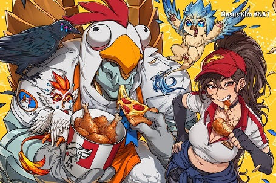
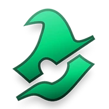
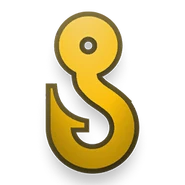

Entenda os novos pings
Lutar: Seu aliado quer lutar, AGORA. Ao sinal, inicie a luta imediatamente ou sinalize que você não quer lutar. Muito usado pelo atirador que está prestes a subir de nível ou viu uma oportunidade.

Pushar: Lembre-se, empurrar uma rota pode significar a vitória do seu time. Seu aliado quer ajuda nisso pois quer ir pra base. Não economize habilidades e tente deixar ele finalizar os minions.

Isca: Toda armadilha precisa de uma isca. Seu aliado quer que você atraia o inimigo, fazendo ele gastar as habilidades. Muito usado pelo caçador.